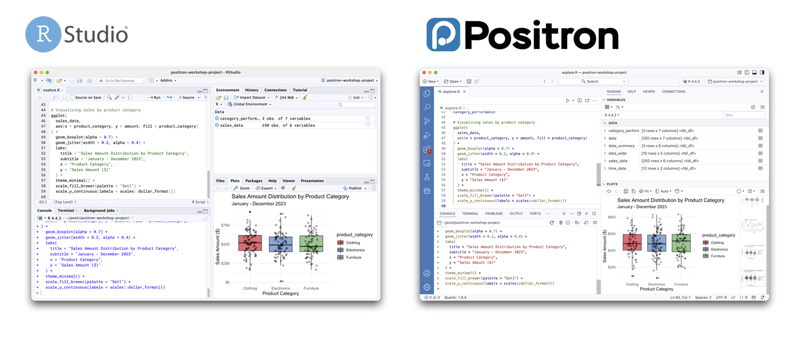
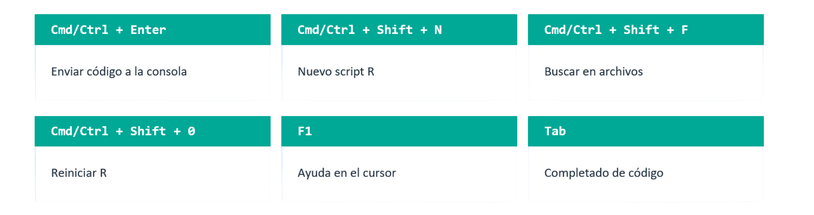
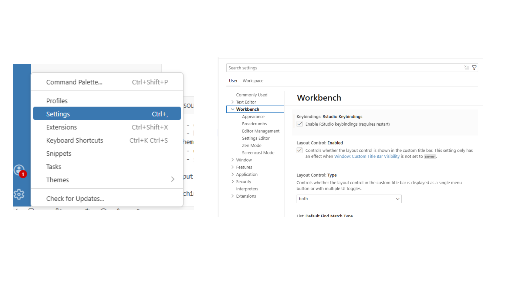
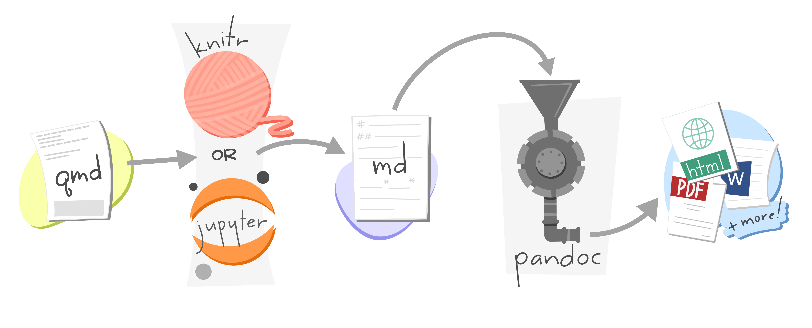
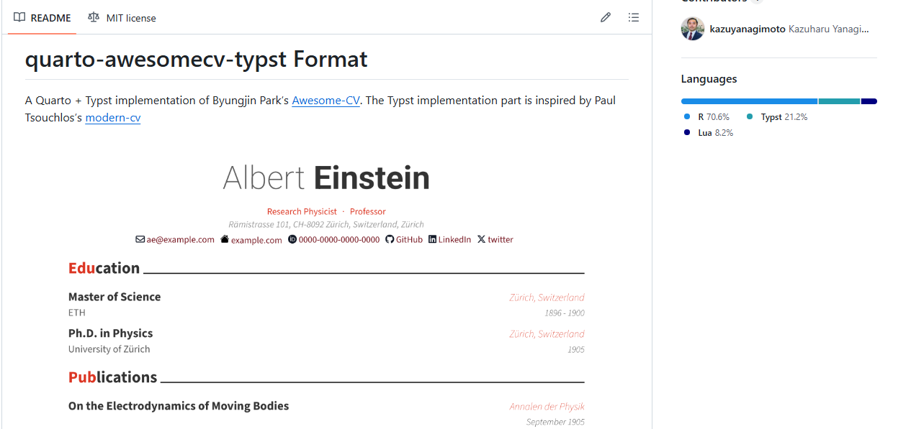

Get ready with me para
armar mi CV en
¿Qué es Positron?
Un IDE de nueva generación
- Desarrollado por Posit (ex-RStudio)
- Basado en VS Code (open source)
- Soporte nativo para R y Python
- Integra Quarto de fábrica
- Actualmente en Beta (2024–2025)
¿Por qué importa?
🔬 Pensado para el flujo de trabajo científico de datos
🐍 Un solo IDE para R y Python juntos
🚀 Potencia de VS Code + experiencia de RStudio
📄 Quarto integrado sin configuración extra
La Interfaz de Positron

Fuente: /https://posit-dev.github.io/positron-workshop/slides/02-explore.pdf
Positron vs RStudio
| RStudio | Positron | |
|---|---|---|
| Lenguajes | Solo R | R y Python nativamente |
| Navegación | Menús y botones | Command Palette + clic derecho |
| Paneles | Environment / History / Files | Variables · Explorer · Git |
| Proyectos | .Rproj como proyecto |
Carpeta = proyecto |
| Output | Inline chunk output | Output en consola |
| Visualización | Salida directa de plots | Panel Plots + Data Explorer |
Fuente: /https://posit-dev.github.io/positron-workshop/slides/02-explore.pdf
Lo que se mantiene igual

Cómo configurarlo

* Activar con: Ajustes → RStudio Keybindings
Ventajas clave de Positron
⚡ Command Palette
Cada acción con Cmd+Shift+P. Búsqueda rápida y shortcuts personalizables.
🖋️ Quarto Nativo
Preview, insertar celdas y navegar secciones. Sin configuración adicional.
📊 Data Explorer
Inspección interactiva de dataframes con filtros y estadísticas por columna.
🐍 Python + R
Ambos kernels en la misma sesión. Variables y plots en el mismo panel.
🌿 Git Integrado
Panel de cambios, commits y push/pull sin salir del IDE.
🔌 Extensiones
Acceso al registro Open VSX. Miles de extensiones disponibles.
💡 La ventaja no es usar los distintos lenguajes a la vez, sino no tener que aprender un IDE diferente cuando necesitás hacer algo en Python.
Múltiples sesiones
Positron puede correr sesiones concurrentes:
🔢 Múltiples versiones de R simultáneamente
🐍 Mezclar sesiones de R y Python
📋 Varias instancias de la misma versión
🔄 Reiniciar una sesión sin afectar las otras
¿Para qué sirve?
- Tarea larga en una sesión → seguir trabajando en otra
- Comparar dos versiones de R o de un paquete en vivo
- Desarrollar una vignette en sesión aislada
- Probar que tu código funciona en la versión del servidor
.rproj vs. 📁carpetas
📁 RStudio: Proyectos con .Rproj
- Coloca un archivo
.Rprojen la carpeta para designarla como proyecto. - Ese archivo almacena preferencias a nivel de proyecto (codificación, tipo de indentación, wrap de Markdown, etc.).
- Sirve para lanzar el proyecto directamente y como ancla de la raíz (usado por
here::here()).
mi-proyecto/
├── mi-proyecto.Rproj ← marca la raíz del proyecto
├── datos/
├── scripts/
└── resultados/📂 Positron: Carpetas sin archivo especial
- Positron no coloca ningún archivo equivalente al
.Rprojen la carpeta. - Si se configuran preferencias a nivel de espacio de trabajo, se crea automáticamente un archivo
.vscode/settings.jsonpara almacenarlas. here::here()sigue funcionando, pero encuentra la raíz a través de la carpeta.git(no del.Rproj).
mi-proyecto/
├── .git/ ← ancla de raíz para here::here()
├── .vscode/
│ └── settings.json ← preferencias locales (opcional)
├── datos/
├── scripts/
└── resultados/⚠️ El archivo .Rproj en Positron
- Positron ignora el contenido del
.Rproj: no lee sus preferencias. - Preferencias como
UseSpacesForTab,MarkdownWrapoNumSpacesForTabdeberán configurarse manualmente en Positron. - Para proyectos Quarto, algunas de esas preferencias conviene migrarlas a
_quarto.yml.
Armemos nuestro CV
Antes de arrancar
¿Quién alguna vez usó Quarto? 🙋♀️
¿Quién alguna vez usó RMarkdown? 🙋♀️
Sé qué es Quarto / Rmarkdown pero nunca lo usé 🙋♀️
Quarto

{typst}

Es un sistema de composición de documentos (como Latex). Mucho más intuitivo y rápido.
Más info en typst.app
Extensiones en {quarto}
Es un paquete que amplía las capacidades del sistema de publicación Quarto. Quarto por sí solo ya permite generar documentos, sitios web, presentaciones y más desde R o Python; una extensión agrega funcionalidades extra, como nuevos formatos de salida, plantillas, filtros de transformación, shortcodes personalizados o plugins para presentaciones.
{awesomecv}

Fuente
Plantilla de Kazuya Nagimoto — quarto-awesomecv-typst
Instalación
En nuestra terminal:
Instalamos el paquete en r. Ponemos en la consola:
The boy who lived is a data scientist

Harry Potter lleva 20 años como Auror, pero descubrió que le apasiona el análisis de datos. Ahora quiere postularse como Analista de Ciencias de Datos en el Ministerio de Magia. Para mostrar cómo funciona esta herramienta, vamos a usar su caso
Armamos nuestro excel o csv
Manos a la obra!

Otras cositas de
🤖 IA: Positron Assistant
Positron incluye Positron Assistant, un cliente de IA integrado directamente en el IDE. Tiene dos modos:
- Se activa desde el ícono en la barra lateral izquierda.
- Podés agregar contexto: el archivo actual, una selección de código, o datos del entorno.
- Se puede usar también dentro del editor.
📦 rig: el gestor de versiones de R
rig (R Installation Manager) es una herramienta de línea de comandos que te permite instalar y administrar múltiples versiones de R en la misma máquina, de forma limpia y sin conflictos.
¿Por qué importa?
Cuando trabajás en varios proyectos, es común que uno requiera R 4.2 y otro R 4.4. Sin un gestor, cambiar de versión manualmente es tedioso y propenso a errores. rig lo hace en un solo comando.
- Instala y desinstala versiones de R —
rig add 4.4.0,rig rm 4.2.1 - Cambia la versión por defecto —
rig default 4.4.0 - Crea librerías de paquetes separadas por versión — cada R tiene sus propios paquetes instalados, sin pisar los de otras versiones
🔗 Instalación: github.com/r-lib/rig
🖊️ Air: formateador de código R
Air es un formateador de código R automático, similar a lo que hace prettier en JavaScript o black en Python. Su función es tomar tu código y dejarlo con un estilo consistente, sin que tengas que pensar en la indentación, los espacios o el largo de las líneas.
- Formatea automáticamente al guardar el archivo (si lo configurás así en Positron)
- Sigue convenciones ampliamente adoptadas en la comunidad R
- Configurable a nivel usuario (global) o por proyecto (
.air.toml) - Integrado con Positron — aparece como formateador disponible en la configuración del editor
🔗 Más info: posit-dev.github.io/air